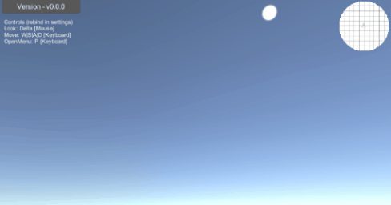

Minimap Tools
Nick Maltbie's MinimapTools for creating basic minimaps for unity game spaces that can be explored by a user.

MinimapTools is an open source project hosted at https://github.com/nicholas-maltbie/MinimapTools
This is an open source project licensed under a MIT License.
Features
The minimap tools package includes the following features:
- UI Element for a minimap on the screen.
- Icons moved on the map based on objects inside the game scene.
- Optional automated generation of minimap texture from background elements.
- [Planned] Arbitrary minimap direction (besides just the XZ plane).
- [Planned] Supporting multiple minimap zoom layers and configuration.
- [Planned] Supporting multiple minimap areas depending on where the player is such as floors of a building.
- [Planned] Revealing the map as the player moves around with configurable levels of fog of war.
Installation
Install the latest version of the project by importing a project via git
at this URL:
https://github.com/nicholas-maltbie/MinimapTools.git#release/latest
If you want to reference a specific tag of the project such as version v1.0.0,
add a release/#v1.0.0 to the end of the git URL to download the package
from th auto-generated branch for that release. An example of importing v1.0.0
would look like this:
https://github.com/nicholas-maltbie/MinimapTools.git#release/v0.1.0
To use the latest release, simply reference:
https://github.com/nicholas-maltbie/MinimapTools.git#release/latest
For a full list of all tags, check the MinimapTools Tags list on github. I will usually associated a tag with each release of the project.
Note: before I started using the package format for the project, I manually
released a unity package you needed to import. Any version before v1.0.0
will not work to import the project.
If you do not include a tag, this means that your project will update whenever you reimport from main. This may cause some errors or problems due to experimental or breaking changes in the project.
You can also import the project via a tarball if you download the source
code and extract it on your local machine. Make sure to import
via the package manifest defined at Packages\com.nickmaltbie.MinimapTools\package.json
within the project.
For more details about installing a project via git, see unity's documentation on Installing form a Git URL.
Scoped Registry Install
If you wish to install the project via a
Scoped Registry
and npm, you can add a scoped registry to your project from all of the
com.nickmaltbie packages like this:
"scopedRegistries": [
{
"name": "nickmaltbie",
"url": "https://registry.npmjs.org",
"scopes": [
"com.nickmaltbie"
]
}
]
Then, if you want to reference a version of the project, you simply
need to include the dependency with a version string and the unity package
manager will be able to download it from the registry at
https://registry.npmjs.org
"dependencies": {
"com.nickmaltbie.MinimapTools": "1.0.0",
"com.unity.inputsystem": "1.0.2",
"com.unity.textmeshpro": "3.0.6"
}
Tests
If you wish to include the testing code for this project, make sure to add
the com.nickmaltbie.MinimapTools to the testables
of the project manifest.
"testables": [
"com.nickmaltbie.MinimapTools"
]
Demo
You can see a demo of the project running here:
https://nickmaltbie.com/MinimapTools/.
The project hosted on the website is up to date with the most recent
version on the main branch of this github repo
and is automatically deployed with each update to the codebase.
Samples
The samples in the project include:
- ExampleSample - Example sample for MinimapTools.
Documentation
Documentation on the project and scripting API is found at https://nickmaltbie.com/MinimapTools/docs/ for the latest version of the codebase.